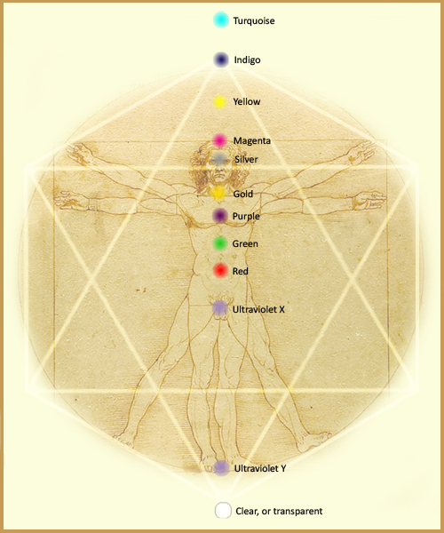

|
The Twelve Chakras |
|
|---|---|
|
 Thousands of years ago, our spiritual guides gave us some tools to help us grow spiritually. These were our grade school textbooks, and we have learned them well. But as we evolve, the new textbooks arrive, building on the first. Spiritual knowledge is not static; it evolves as we do. New information arrives when we are ready to receive it. This is why so much new information is coming in today.If you know what a chakra is, then you probably know that there are seven of them and that they have a corresponding color, or vibration. This knowledge has been with us for thousands of years. And for thousands of years, it was true. But as we evolve and ascend, the chakra system is evolving as well. The ascended, fourth-dimensional human (or partially ascended human) has 12 chakras, and they differ in many ways from the 7 chakras of the third dimension. Changing from 7 tones to 12 is a lot like changing music modalities. The vibrations are different. The colors are different. The sound, the harmony, is different. And of course, the whole being is different. If you are a healer, you will find that some people still have 7 chakras, some have 12, and some may be somewhere in between. If the twelve chakras have been activated, then the person is at least half-way to living in a fourth-dimensional reality. Use your intuition to see where the client is, dimensionally, and use the appropriate healing colors. Also, for all fourth-dimensional humans (and higher), it is imperative that chakra clearing begin with the uppermost chakra and work downward to the blocked chakra. So what are the new chakras and their color correspondences? Let's start from the top and work our way down. Twelfth Chakra Color: Turquoise The twelfth chakra is three steps above the crown chakra, in the aura. It corresponds with the bottom point of the upper MerKaBa (of Source, or your Higher Self) that meets the human MerKaBa, or light body. This chakra is associated with masculine energy—"Father Sky." It is our connection to Source. Eleventh Chakra Color: Deep indigo The eleventh chakra is two steps above the crown chakra, in the aura. It corresponds with the upper point of the human MerKaBa. It encompasses all of the lower chakras, so it must remain clear or all of the chakras will have problems. While the twelfth chakra corresponds with the masculine, the eleventh chakra corresponds with feminine energy—the Christ-consciousness of Mary, Kwan Yin, or Mother Earth. Its deep indigo energy radiates outward and encompasses things other than ourselves, so it is associated with compassion and connection with all life, including Mother Earth. Tenth Chakra Color: Yellow The tenth chakra is one step above the crown chakra, in the aura. Its energy radiates infinitely in a linear plane in all four directions: front, back, left, and right. Therefore, it is the chakra that connects us with everything. It also protects the Higher Mind processes. Ninth Chakra Color: Magenta The ninth chakra is the crown chakra. It is the portal to the rest of the body as it will be. It is also the upper root chakra, where creation and manifesting energy live. As such, issues about self-denial, feeling undeserving, and even 4-D sex will show up here. Half-tone Chakra (8.5) Color: Amber There is a half-tone chakra between the eighth and the ninth chakra. This chakra provides a clear connection between the third eye and the crown, and it governs emotional and mental clarity. Problems with any of these areas usually show up here. Eighth Chakra Color: Silver The eighth chakra is the third eye, or inner vision. It is the foundation for the higher chakras and must be kept clean and clear. Its silver ray radiates as a cone, with the point of the cone beginning at the third eye, then spreading outward at the back of the head. Seventh Chakra Color: Gold The seventh chakra is the throat chakra. It is about speaking your truth without judgment or delineation. Its color is gold—Golden Truth. Use this color in healing when people need help understanding that their voice—every voice—matters. Sixth Chakra Color: Purple The sixth chakra is the heart chakra. The ascended heart chakra is concerned with Christ-consciousness, or Universal love. This is unconditional love for everyone and everything. During the transition, many healers may see heart problems because this must be cleared in order to ascend. If it cannot be healed in the physical body, then people will leave it to heal on the other side. Fifth Chakra Color: Green The fifth chakra is the solar plexus. Many formerly third-dimensional heart chakra issues now live here, namely the "lower heart" functions such as connectivity and interpersonal relationships (romantic love and friends and family). This may seem like a demotion for feelings that we all really care about, but it isn't. When the upper heart, or Christ-consciousness, is open and clear, it includes these wonderful, healthy feelings of connection with those we love, but it also allows us to move far beyond them and to maintain much healthier relationships. Fourth Chakra Color: Red The fourth chakra is the seat of emotions, and it corresponds with the old second chakra, behind the navel. Emotional issues are centered in this chakra. Third Chakra Color: Ultraviolet X The third chakra is where the root chakra is in the old system. It helps us to understand our need to be intimately connected with other people. Problems with connection or intimacy may center in this chakra. I call the color associated with this chakra "Ultraviolet X" because it has no name and cannot be seen by most third-dimensional human eyes. It lies in the ultraviolet frequency. Second Chakra Color: Ultraviolet Y The second chakra is in the soles of both of your feet. It is the grounding chakra. Whereas in 3-D this is more of a simple grounding, in 4-D this chakra helps us to feel Mother Earth and to know that we are her children. It allows us to be intimately associated with her chakra system, so abuses of the Mother can never again occur with this understanding. The color of this chakra also lies in the ultraviolet frequency. First Chakra Color: Clear, or transparent The first chakra is below your feet, in the earth. It corresponds with the bottom point of your MerKaBa, or light body. Use the clear color of this chakra for general healing work, along with another color, "Clear Color Y," that is not associated with any of these chakras. |
|